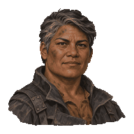
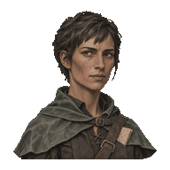
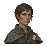
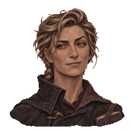
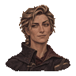
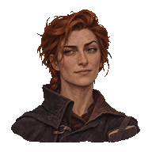
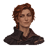
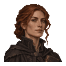
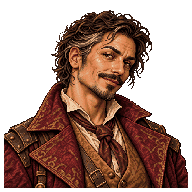

Branna
Mine rescue worker · Melee
Approved likeness

Nessa
Survey assistant · Scout
Approved likeness


Maelin
Unlicensed scholar · Mage
Dirty-blonde revision


Earlier studies



Rook
Expedition broker · Fixer
